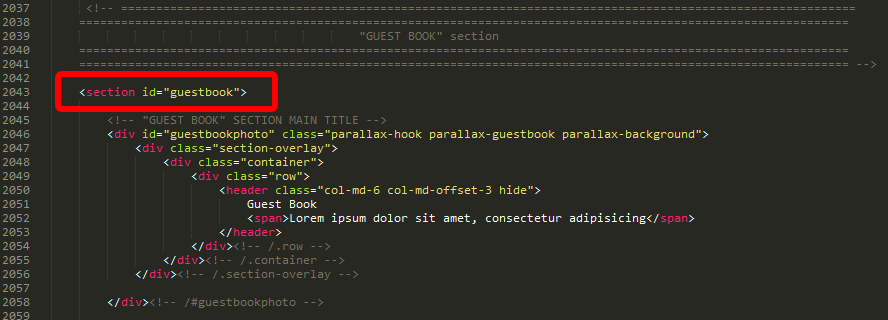
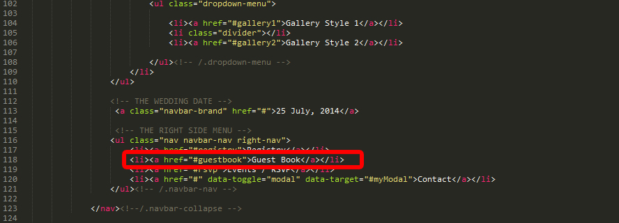
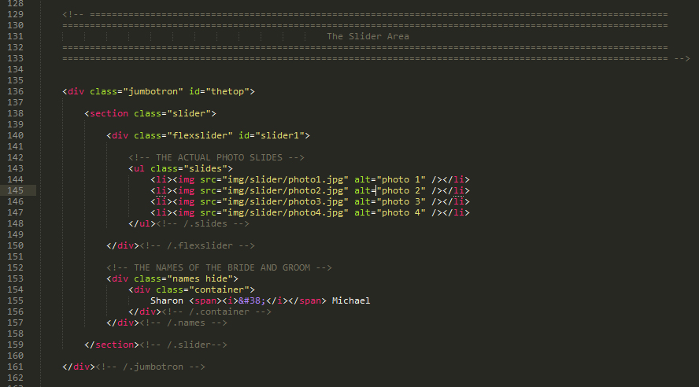
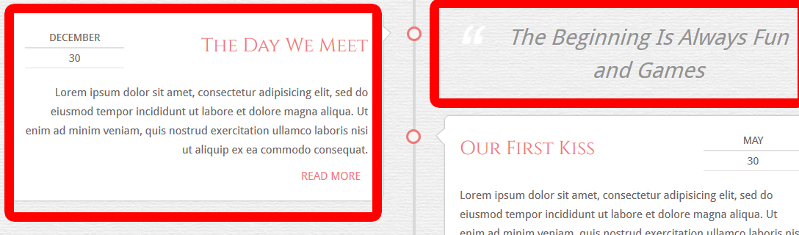

Thank you for purchasing my HTML template. Please read this document and explore the item comments and FAQ items for further information and help.
The .zip package you've downloaded from ThemeForest contains the following:
Scripts and additional resources used in this template:
1. Pre-Loader Plugin's Settings
The preloader plugin is the first screen you see when you load the website into a browser. It is controlled by the jquery plugin QueryLoader2. You can change a couple of settings for this plugin from js > main.js, lines 7-46. Here are the properties you can change:
2. Changing the Wedding's Date/Time
Inside the QueryLoader2 plugin there is also a small JS code used to generate the Javascript count down. To change the Count Down date and time, you need to go to js > vendor > jquery.queryloader2.js. On line 938 find this code:
var BigDay = new Date("25 Jul 2014, 15:30:00");
And change the template's default date and time with the date and time you desire.
3. Removing the Pre-Loader
Here is what you need to do if you want to remove the preloader screen from your website
a) please open index.html. Around line 2448 remove this:
<script src="js/vendor/jquery.queryloader2.js"></script>
b) in the same index.html file, on line 41 find this:
<div class="bghide"> </div>
... and remove it
c) After completing the above steps please go to js > custom.js. On the first line find this:
/* ===================================================
preloader
=======================================================*/
if( device.tablet() && device.mobile() ) {
window.addEventListener("DOMContentLoaded", function() {
$("body").queryLoader2({
minimumTime: 50,
showbar: true,
barColor: "#fff",
textColor: "#000;",
backgroundColor: "#ff9192",
barHeight: '10',
percentage: true,
completeAnimation: "fade",
onComplete: function() {
$(".bghide").fadeOut("fast", "easeInSine", function(){
$(this).remove();
});
}
});
});
} else {
$(document).ready(function() {
$("body").queryLoader2({
minimumTime: 50,
showbar: true,
barColor: "#fff",
textColor: "#000;",
backgroundColor: "#ff9192",
barHeight: '10',
percentage: true,
completeAnimation: "fade",
onComplete: function() {
$(".bghide").fadeOut("fast", "easeInSine", function(){
$(this).remove();
});
}
});
});
};
... and remove it
The "Wedding Bliss" template has a "one page" component - that is the "home page". Each section of the homepage starts with the tag <section> and with an ID that is linked directly to the corresponding menu item. For example, here is the start of the "Guest Book" section:

and here is the corresponding menu item that links to the "guest book" section:

To create a new page section, all you have to do is create a new <section> tag, give it an ID and then link it to a newly created menu item.
"Wedding Bliss" template uses Flexslider jQuery plugin, available here.
You can find the slider in the file "index.html" between lines 136 - 161

You can insert your own photos by modifying the SRC attribute of each <IMG> tag:
<img src="path/to/your/photo alt="my photo" />
If you need to use photos that have different heights, please go to js > main.js, around line 94 find this:
smoothHeight: false,
... and replace it with this:
smoothHeight: true,
The FlexSlider also contains the div with a class of "names" that contains the actual names of the bride and groom. You can find this div between the lines 153 and 157, all you have to do is to modify the names with your own.
"Our Story" section is an area designed so that the bride and groom are able to share the story of their relationship. It is organized following the "Facebook Timeline" model.
1. The section's main photo
This is the photo that receives the parallax effect. You can change this from css > main.css, line 505, ourstoryphoto:
#ourstoryphoto {
background-image:url(path/to/our/image);
2. The Bride and Groom Photos
You can upload 2 photos of any size (but we recommend a maximum of 400x600, to keep the website's speed in a decent limit). You don't have to crop your photos to be a round shape, the css will take care of this.
3. The Timeline
The timeline is a series of DIV's with the class of "post". The posts you want to assign to one particular year are wrapped in a div with the class of "theyear".
Depending on which side you want your timeline post to be, you can give it an additional class of "ODD" - post on the left side - or "EVEN" - post on the right side.
Each post gives the user the possibility to insert an additional short content - a short quote or a photo gallery. This content will be on the opposed side of the main timeline line. So, if you created a new post with the class of "ODD", your post will display on the left side. If for this post you also create an "excerpt" - this excerpt will display on the right side:

In the above example, "the day we meet" is a post with the class of "ODD" and "the beginning is always fun and games" is the excerpt of the same post, displayed on the right.
The post's excerpt can be anything - a gallery, a quote, a small video. Also you don't have to create an excerpt for each post, only for the ones you want.
"The Bride's Side" and "The Groom's Side" sections are 2 areas designed to feature the friends and family of the bride and groom.
1. The section's main photo
This is the photo that receives the parallax effect. You can change this from css > main.css, line 839, #thebridesidephoto and line 949 - #thegroomsidephoto:
#thebridesidephoto {
background-image:url(path/to/our/image);
2. The photos for the wedding participants
These are very easy to change. You can upload photos of any size (but we recommend a maximum of 400x600, to keep the website's speed in a decent limit). You don't have to crop your photos to be a round shape, the css will take care of this.
"The Wedding Location" section is an area designed to give more information about the main event's date and time. We've also included in this area more information that could benefit your out-of-town guests - like "hotels nearby" and "local attractions".
1. The section's main photo
This is the photo that receives the parallax effect. You can change this from css > main.css, line 1057, #weddinglocationphoto:
#weddinglocationphoto {
background:url(path/to/your/image);
"Blog Model 1" section is an area designed for keeping a wedding blog.
1. The section's main photo
This is the photo that receives the parallax effect. You can change this from css > main.css, line 1204, #blog1photo:
#blog1photo {
background:url(path/to/your/img);
We recommend a size of 2200x1450 px for the main section's parallax photo.
2. Adding the blog filters and blog posts
This blog version is created using the MegaFolio js plugin. Please reffer to the MegaFolio documentation included in this template (help > megafolio documentation)
"Blog Model 2" section is an area designed for keeping a wedding blog.
1. The section's main photo
This is the photo that receives the parallax effect. You can change this from css > main.css, line 1263, #blog2photo:
#blog2photo {
background:url(path/to/your/img);
We recommend a size of 2200x1450 px for the main section's parallax photo.
"Gallery Model 1" section is an area designed for showing off the photos. It is filterable so you can have photos of different categories and the user will be able to see only the category he chooses. Here you can also link images to different pages or sections of your website or you can view the images in full size, thanks to the FancyBox lightbox plugin
1. The section's main photo
This is the photo that receives the parallax effect. You can change this from css > main.css, line 1315, #gallery1photo:
#gallery1photo {
background:url(path/to/your/img);
We recommend a size of 2200x1450 px for the main section's parallax photo.
2. Adding the gallery filters and gallery items:
This gallery version is created using the MegaFolio js plugin. Please reffer to the MegaFolio documentation included in this template (help > megafolio documentation)
"Gallery Model 2" section is an area designed for showing off the photos. This gallery model contains no filters, it's a nice full width gallery. Here you can also link images to different pages or sections of your website or you can view the images in full size, thanks to the FancyBox lightbox plugin
1. The section's main photo
This is the photo that receives the parallax effect. You can change this from css > main.css, line 1421, #gallery2photo:
#gallery2photo {
background:url(path/to/your/img);
We recommend a size of 2200x1450 px for the main section's parallax photo.
2. Adding the gallery items:
This gallery version is created using the MegaFolio js plugin. Please reffer to the MegaFolio documentation included in this template (help > megafolio documentation)
"The Registry" section is an area designed for creating a wedding registry. Here you can have links to different stores where you registered, but also an area that allows the user to make a direct donation for a fixed sum.
1. The section's main photo
This is the photo that receives the parallax effect. You can change this from css > main.css, line 1506, #registryphoto:
#registryphoto{
background:url(path/to/your/img);
We recommend a size of 2200x1450 px for the main section's parallax photo.
"Guest Book" section is an area designed for your wedding guests to leave a couple of words for you. Unfortunately at this stage the guest book entries need to be added manually, but in the WordPress version this will be done automatically
1. The section's main photo
This is the photo that receives the parallax effect. You can change this from css > main.css, line 1645, #guestbookphoto:
#guestbookphoto {
background:url(path/to/your/img);
We recommend a size of 2200x1450 px for the main section's parallax photo.
"Calendar/RSVP" section is an area designed for you to list the main events that are closely linked to your wedding and also to let your guests send you RSVP's for the events they want to attend.
1. The section's main photo
This is the photo that receives the parallax effect. You can change this from css > main.css, line 1204, #blog1photo:
#rsvpphoto {
background:url(path/to/your/img);
We recommend a size of 2200x1450 px for the main section's parallax photo.
2. Creating the calendar events
The calendar events are created using the Bootstrap framework. Each new "row" is wrapped in a div with the class "border" (so we can get that nicely dotted border). Inside each new "row" of events, the events are added using this template:
<div class="col-md-X">
<div class="date">
5<span>th</span>
</div><!-- /.date-->
<h5 class="bachelorsParty">Bachelors Party</h5>
</div><!-- /.col-md-X -->
It's important that for each calendar event you have an <h5> header with a unique class and the title of your event. This <h5> tag will help generate the RSVP form. Your users can click on each of these events they want to take part in, then complete the rest of the "rsvp" form and send it to you.
3. The RSVP form
The RSVP form is found in index.html between the lines 2279 and 2338. The form links to the php file called "send_rsvp.php". In this file , on line 4 you can add the email address where you want to receive these RSVP answers. Please replace "yourownemail@mymail.com" with your own email address.
The "Contact Us" form is designed for your guests to send you additional messages - the ones that can not be sent using the RSVP form. The "contact us" form is a lightbox that can be accessed through the "contact" menu item. The form needs to be present on each of the website's pages at the bottom of the page, right before the "<footer>" tag.
The contact us form links to the php file called send_mail.php. In this file , on line 4 you can add the email address where you want to receive these RSVP answers. Please replace "yourownemail@mymail.com" with your own email address.
What you bought here is a HTML template, and not a WordPress theme, therefore you can not install it as WordPress theme. However, if you have a little pacience, I am currently working on creating the WordPress theme, which will be available soon :)
The single pages can have a left column or a right column. Each single page uses the Disquis system in order to accept comments. In each of the single pages you need to search for the string "disqus-username" and replace it with your own username (after you've created it on the disquis website)
The colors for this template are very easy to change.The template uses #f07677 as a default - which is the pink you can see in the website's date and buttons (among others). The color stylesheet lives in css > colors > pink.css. To create another color simply save the "pink.css" file under a different name (for example "blue.css). In the newly created "blue.css" file do a "search and replace" for this string: #f07677 and replace it with a new hex color of your choice.
After you've replaced the pink color, don't forget to include the newly created "blue.css" file in the main style sheet. Go to css > main.css, on line 8 find this:
@import url("colors/pink.css");
... and replace with this:
@import url("colors/blue.css");
This way you can create as many colors as you wuoud like without having to search through the whole template for the color you need to change.